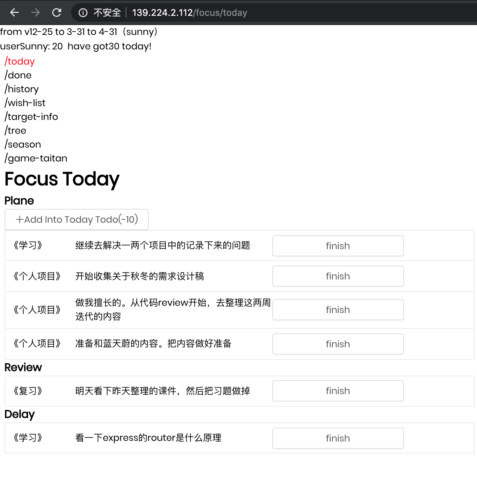

第一版本的target有什么问题？
- 留存难
用了两天就不来了。
-
afk后难以返回
用的时候30天连续用。不用的时候就30天连续不来
然后为了解决核心留存问题，我提出了2个方案，分别是target-tree，season-sunny

这是一款"学习-复习"的提醒工具。
 存在什么问题呢？仅仅是tood。我们自然而然想到，通过一个容器，来承接所有的todo。我叫他target，而todo就是画正字用了两天就不来了。
用的时候30天连续用。不用的时候就30天连续不来
然后为了解决核心留存问题，我提出了2个方案，分别是target-tree，season-sunny